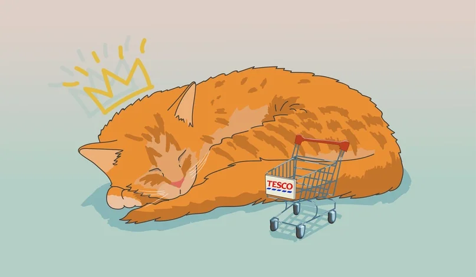

Данила Блюз вспоминает последние медийные скандалы, связанные с котами, и зовет всех обращаться в новую религию
В Британии случилось немыслимое. В городе Норидж, в одном из магазинов Tesco, администрация выставила вон местного любимца — рыжего кота Пампкина. В течение года котофей спокойно тусил в магазине, кемарил на полках или у входа, никого не обижал, позволял всем себя гладить, и вдруг ему отказали от дома. Директор магазина, 49-летний Эндрю Табинер, рассказал местной газете: в политику Tesco не входит содержание котов, это — антисанитария, да и персонал жалуется на Пампкина, дескать, тот мешает им работать и чуть ли не ворует из кассы.

Но никто из местных не стал слушать эту напраслину, жители атаковали официальную страницу Tesco в Facebook требованиями позволить Пампкину тусоваться в магазине, иначе они будут призывать к бойкоту всей сети супермаркетов. Кстати, нориджский магазин уже потерял в клиентуре — население единым фронтом вступилось за обиженного Пампкина и перестало там затариваться. Правда, по словам хозяйки, кот совсем не расстроился: у него полно мест, где ему рады — городской паб и окрестные магазины позволяют рыжему гостить у них сколько душе угодно.
К чему я это все? К тому, что, может быть, владелец магазина и прав: коту не место на полках с продуктами. Но есть кое-что выше правды — это котики.
Нельзя обижать котиков — таков новый завет XXI века, главная прописная истина.

Вспомните недавний скандал с «Аэрофлотом» и котом Виктором, которого хозяин втихаря протащил в салон, вместо того чтобы сдать в багаж. Авиаперевозчик, возможно, и прав, что наказал кошкиного человека, отняв все накопленные за много лет 400 бонусных миль. Тем более, тот сам дурак — начал похваляться своей аферой в соцсетях. Такое спускать на тормозах было никак нельзя. Но опять же, котики выше правоты, выше корпоративного имиджа. В этом есть что-то от христианской философии. Пожертвуй всем — и наследуешь еще больше, получишь Царствие Небесное, подставь другую щеку — и победишь, не заботься о хлебе насущном — и будешь сыт. Пожертвуй «Аэрофлот» своим имиджем, приласкай они котика в соцсетях — ребята бы выиграли. А так на этом скандале нажились другие компании, которые начали осыпать Виктора и его человека халявными ништяками, тогда как владельцев «Аэрофлота» поливали говном в интернете.
Не надо даже шутить про котиков, каким бы уморительным тебе это ни казалось. Один не очень умный западный блогер Шейн Доусон как-то раз в своем подкасте сказал, что не то трахнул своего кота, не то кончил на него (я не стал вникать в эту мерзость). Сказал и забыл. Но спустя несколько лет злопамятный кошачий бог припомнил ему сей грех: на Шейна обрушилась лавина ненависти. Не усмирило котозаступников даже то, что спустя несколько дней Шейн объявил о помолвке со своим бойфрендом. Блогера обвинили в том, что таким дешевым трюком он, мол, пытается отмазаться от скандала с котоеблей. Пришлось Шейну записывать слезливое извинительное видео: чувак объяснял, что это неудачная шутка, и он никогда в жизни не кончал на своего кота, поэтому умоляет хейтеров оставить его в покое.
Поэтому запомните, люди, даже в помыслах своих не вздумайте обидеть котика! Воистину, не дураки были египтяне: почитали котофеев, молились им и отдавали лучшие куски пищи. Когда они воевали с персами, те вместо щитов несли перед собой кошек, поэтому египетские воины не пошли в атаку, чтобы случайно не поранить котеек. Тогда Египет проиграл, но посмотрите на век нынешний — пирамиды стоят, как стояли, Египет до сих пор цветет и пахнет, а где Персия? Ну-ка найдите ее на карте! Нету Персии, сгинула.

А пророк Мухаммед, тоже дурак по-вашему? Нет, конечно, ведь он уважал котиков. Когда его любимая кошка уснула на рукаве его халата, Мухаммед отрезал от халата рукав да так и пошел на улицу, лишь бы не беспокоить благословенный сон животины. Мусульмане вообще в этом плане идут впереди планеты всей: пока глупые капиталисты вроде директора норвиджского Tesco выгоняют котеек на улицу, мусульмане разрешают кошкам входить в мечеть и делать все, что им вздумается.
Потому что миром правят не рептилоиды, не жидомасоны, не баварские иллюминаты, не жажда власти, не секс и не голод. Миром правят котики.
Именно они решают, кого казнить, а кого миловать, кто обречен на успех и миллиард лайков, а кому положены забвение и плевок на могилу. Почитайте отца и мать своих, завещал старый Господь. Новый Бог прекращает лизать себя под хвостом и поправляет: почитайте отца, и мать, и котика.
Вспомните историю бездомного музыканта Джеймса и его кота по имени Боб. У Джеймса не было ничего, кроме котофея. И что в итоге? Теперь у парня особняк, всемирная слава и британская национальная кинопремия. Даже если у вас за душой — ничего, заведите кота, отдайте ему всю свою любовь и в итоге воздастся вам сторицей. Гладьте своих котиков, кормите их вкусняшками, чешите им животики и играйте с ними этой пушистой хуйнюшкой на палочке с веревочкой. И истинно говорю вам, наследуете Царствие Небесное! Аминь.